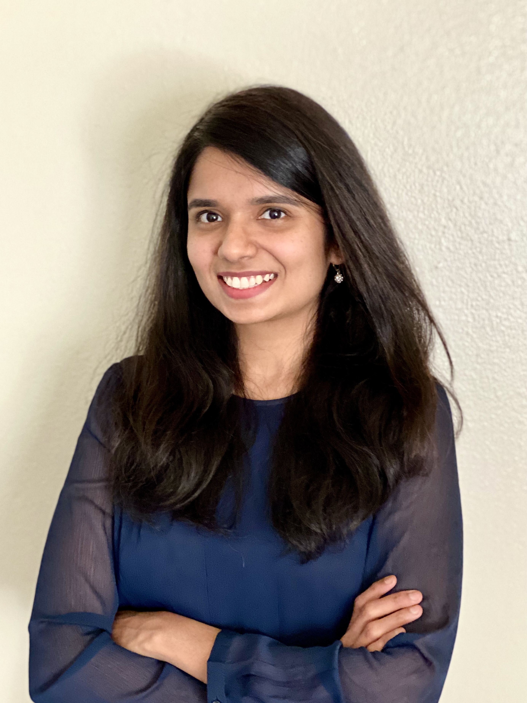

| Chitra R. Karanam | [Email] [LinkedIn] [Google Scholar] |
| 
Chitra Karanam, Ph.D.
|
Updates
Mar. 2023: Started at a new role - I'm now the Radar Technical Lead at Nuro. Jan. 2021: Joined Nuro as a Software Engineer on the Radar team. Dec. 2020: Defended my thesis: Robotic RF Sensing with Off-the-Shelf Devices, and graduated from UCSB. Sep. 2019: Released video and project page for XModal-ID: Through-Wall Person Identification from Candidate Video Footage Using WiFi. July 2019: Our paper XModal-ID: Using WiFi for Through-Wall Person Identification from Candidate Video Footage is accepted to appear in MobiCom 2019. June 2019: Awarded the ECE Dissertation Fellowship at UCSB. April 2019: Presented our paper Tracking from One Side -- Multi-Person Passive Tracking with WiFi Magnitude Measurements at IPSN 2019 in Montreal, Canada. Feb. 2019: Our paper Tracking from One Side -- Multi-Person Passive Tracking with WiFi Magnitude Measurements is accepted to appear in IPSN 2019. July 2018: Our paper Adaptive Near-Field Imaging with Robotic Arrays appeared in the proceedings of IEEE Sensor Array and Multichannel Signal Processing Workshop. April 2018: Presented our paper Magnitude-Based Angle-of-Arrival Estimation, Localization, and Target Tracking at IPSN 2018 in Porto, Portugal. [slides] March 2018: Awarded the CCDC fellowship by the Center for Control, Dynamical Systems, and Computation at UCSB. Jan. 2018: Our paper Magnitude-Based Angle-of-Arrival Estimation, Localization, and Target Tracking is accepted to appear in IPSN 2018. Oct. 2017: Check out our new paper Robotic Through-Wall Imaging: Radio-Frequency Imaging Possibilities with Unmanned Vehicles published in the IEEE Antennas and Propagation Magazine, Special issue on Electromagnetic Inverse Problems for Sensing and Imaging. June 2017: Released video and project page for X-Ray Eyes in Sky: Drones and WiFi for 3D Through-Wall Imaging. June 2017: Our work on 3D Through-Wall Imaging with Drones and WiFi is in the News: BBC Click, Engadget, TechCrunch, Mashable, TechRadar, PC Mag, Digital Trends, IFLScience, The Register, New Atlas, UCSB press release, IEEE Spectrum, ACM News, and other outlets. April 2017: Presented our paper 3D Through-Wall Imaging with Unmanned Aerial Vehicles Using WiFi at IPSN 2017 in Pittsburgh, PA. Jan. 2017: Our paper 3D Through-Wall Imaging with Unmanned Aerial Vehicles Using WiFi is accepted to appear in IPSN 2017. Dec. 2016: Passed my Ph.D. qualification exam. |
Hi there! I'm the Radar Tech Lead at Nuro - working on radars for our autonomous delivery vehicles. Prior to this, I was a Radar DSP Software Enginner on the radar team at Nuro, after completing my Ph.D. in ECE at University of California, Santa Barbara, with a focus on RF sensing and localization.
Education
-
B.Tech and M.Tech Dual-degree in Electrical Engineering (Communication Systems) from Indian Institute of Technology Madras : 2014
-
MS/PhD in Electrical and Computer Engineering (@ Mostofi-lab) from University of California Santa Barbara : 2014 - 2020
Publications
H. Cai*, B. Korany*, C. R. Karanam*, and Y. Mostofi, "Teaching RF to Sense without RF Training Measurements," in proceedings of the ACM on Interactive, Mobile, Wearable and Ubiquitous Technologies (IMWUT), Dec. 2020. [pdf] (*equal contribution)
B. Korany*, C. R. Karanam*, H. Cai*, and Y. Mostofi, "XModal-ID: Using WiFi for Through-Wall Person Identification from Candidate Video Footage," in proceedings of the 25th Annual International Conference on Mobile Computing and Networking (MobiCom), Oct. 2019. [pdf] [project page] [video] [slides] (acceptance rate: 19%) (*equal contribution)
C. R. Karanam, B. Korany, and Y. Mostofi, "Tracking from One Side -- Multi-Person Passive Tracking with WiFi Magnitude Measurements," in proceedings of the 18th ACM/IEEE International Conference on Information Processing in Sensor Networks (IPSN), April 2019. [pdf] (acceptance rate: 27%)
B. Korany*, C. R. Karanam*, and Y. Mostofi, "Adaptive Near-Field Imaging with Robotic Arrays," in proceedings of the 10th IEEE Sensor Array and Multichannel Signal Processing Workshop, July 2018. [pdf] (*equal contribution)
C. R. Karanam*, B. Korany*, and Y. Mostofi, "Magnitude-Based Angle-of-Arrival Estimation, Localization, and Target Tracking," in proceedings of the 17th ACM/IEEE International Conference on Information Processing in Sensor Networks (IPSN), April 2018. [pdf] (acceptance rate: 26.5%) (*equal contribution)
S. Depatla, C. R. Karanam, and Y. Mostofi, "Robotic Through-Wall Imaging: Radio-Frequency Imaging Possibilities with Unmanned Vehicles," IEEE Antennas and Propagation Magazine, Special issue on Electromagnetic Inverse Problems for Sensing and Imaging, 59, no. 5 : 47-60, Oct. 2017. [pdf]
C. R. Karanam and Y. Mostofi, "3D Through-Wall Imaging with Unmanned Aerial Vehicles Using WiFi," in proceedings of the 16th ACM/IEEE International Conference on Information Processing in Sensor Networks (IPSN), April 2017. [pdf] [project page] [video] (acceptance rate: 18.3%)
Trivia About Me
In my spare time, I like to read books and listen to rock music. I'm fascinated by evolutionary biology, space-time fundamentals, and astronomy.